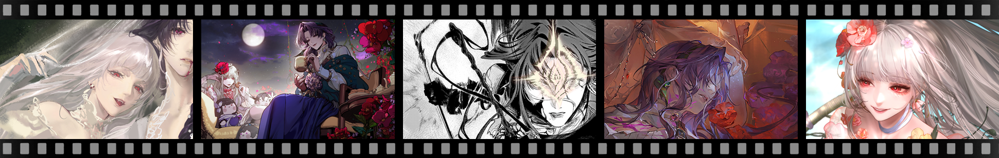
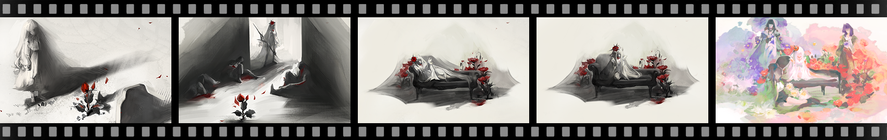

ホーム
登場人物
相関図
関係性補足
運命の織機
世界観/年表
時間軸
GALLERY #SL
紆余曲折
死生契闊
刎頸之交
朝朝暮暮
2人雰囲気 - SL
🧵🥀
生死與共、萬世不革
心が通じ合い、死生を共にし、決して裏切らない

GALLERY #L
簡単に希望と平和をもたらす救世主なんて存在しない。ただひたすら先を歩く先駆者たちだけだ。
🥀
罪人たちの救世主
昨日の太陽は黒い担架で運ばれていった

要素？アイデア？物置！
PLAN A
背景参考
構図参考
タンゴ？共踊参考
マウントポジションで殴る参考
ポーズ参考
L雰囲気
擬獣化/平和な日常